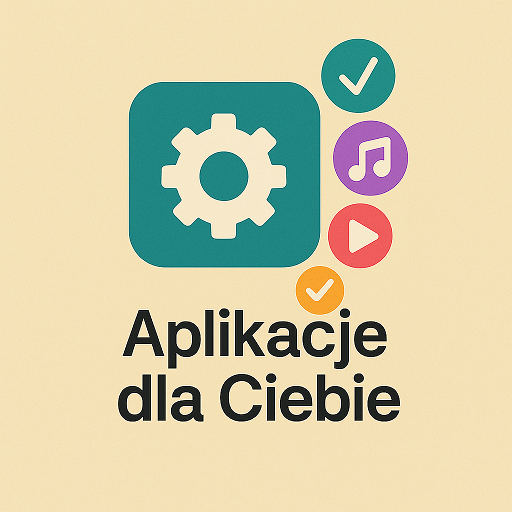
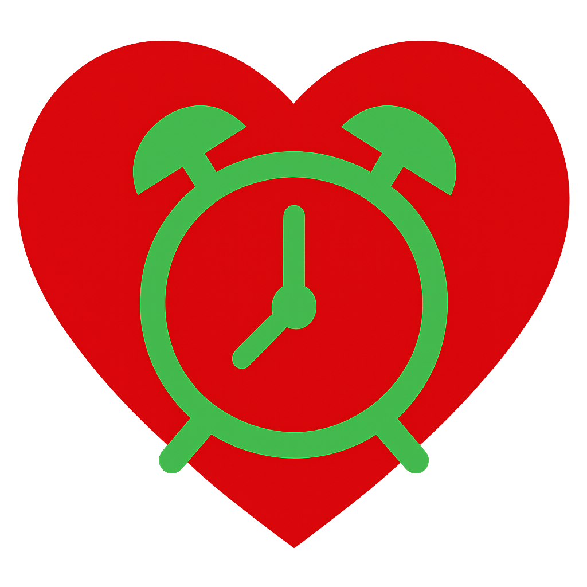

🧠 Aplikacje tworzone z myślą o Tobie
Jesteśmy małym zespołem – tworzymy aplikacje, które łączą technologię z troską.
Nasze programy są proste, przyjazne i pomocne – projektowane z myślą o codziennych potrzebach użytkownika.
- 🔷 Mogą służyć do nauki, organizacji czasu czy ochrony komputera.
- 🔷 Działają lokalnie – bez reklam, bez zbędnych uprawnień, z szacunkiem dla Twojej prywatności.
- 🔷 Nie posiadają podpisu cyfrowego, dlatego mogą być na początku wykrywane przez niektóre programy antywirusowe.
💬 Będzie nam bardzo miło, jeśli zechcesz wypróbować którąś z aplikacji i podzielić się swoją opinią lub uwagami.
🕰️ Twój czas, Twoje zdrowie
To lekki, przenośny program działający w tle – bez potrzeby instalacji. Wzorowany na metodzie Pomodoro, pomaga odzyskać kontrolę nad czasem spędzanym przy komputerze. Monitoruje cykle pracy i przerw, wspierając w dbaniu o równowagę między skupieniem a odpoczynkiem.
- 🌐 Wielojęzyczny interfejs – PL, EN, DE, FR
- ⏳ Tryb Pomodoro – 30/2 lub 45/5
- 💤 Wyłącznik komputera – wpisz godzinę
- 🧠 Spokojny interfejs – działa w tle
🛡️ Strażnik Procesów
Narzędzie do monitorowania, wykrywania i analizowania podejrzanych procesów w systemie Windows. Pozwala bezpiecznie zarządzać aplikacjami, usuwać logi i chronić system w czasie rzeczywistym.
- 🔍 Lista procesów – filtrowanie, zakończenie
- 🦠 Wykrywanie antywirusów i narzędzi
- 📤 Przycisk „Zaufaj” – usuwanie podejrzanych
- 🧹 Usuwanie logów i aktualizacji
- 🕵️ Monitoring systemu – powiadomienia
🎵 Yanosik Turbo 1.0 – Twoja osobista biblioteka dźwięku Nowość!
Yanosik_turbo_2028 to kompaktowy odtwarzacz i pobieracz MP3 legalnych źródeł.
wyposażony w funkcje zarządzania playlistą, dodawania ulubionych oraz stylowy, przejrzysty interfejs.
🔐 Legalność:
Program służy do pobierania:
- Własnych treści
- Muzyki udostępnionej publicznie
- Plików za zgodą autora
Nie zachęcamy do łamania praw autorskich.
- ✅ Pobieranie muzyki z różnych legalnych źródeł w sieci
- ✅ Obsługa głośności, pętli oraz przeskakiwania do następnych utworów
- ✅ Dodawanie ulubionych i przełączanie między widokiem pełnym a listą ulubionych.
- ✅ Brak logowania i śledzenia
- ✅ Blokuje nieprawidłowe playlisty

